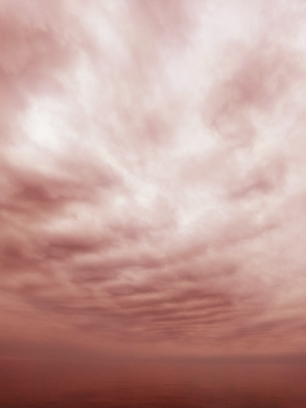
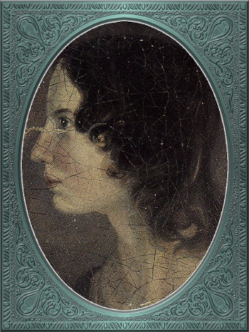

WUTHERING faq/interview/manifesto
Allow me to repeat my statement
This site will explore the mysterious allure of the Inland Sea, which may lie close to what some of the poets of the nineteenth century, the Romanticists, were on about.
and explain what I mean…
Why have you renamed Lake Superior to The Inland Sea?
Simply put, it's too big and grand and epic and sublime a body of water to just be a lake. For me a lake is something that can be looked across, from one shore to the far shore. Or maybe at only a few widest places can I not see to the other side.
Really now, do you think the world's largest body of fresh water surface-wise (31,700 square miles)—bigger than lots of bodies called seas, for example, the Aral Sea, the Dead Sea, the Sea of Galilee, the Salton Sea—is just a lake? I don't. I think it's definitely a sea. The Ojibwa name gichi-gami means "great sea." The French explorers came up with the name le lac supérieur, and they meant the "upper lake" above Lake Huron. This was anglicised to Lake Superior. A comedy of geographic-cartographic errors, I'd say.
Perhaps Inland Sea is vague; there are other bodies of water around the world referred to as such. As a book title, James Fenimore Cooper called Lake Ontario the Inland Sea. And with Operation Inland Seas the U.S. Navy referred to all of the Great Lakes as the inland seas when, upon its completion in 1959, they sent a flotilla up the St. Lawrence Seaway. But vague is good. It means we're being local and vernacular, provincial, if not parochial about our sea. Let them deal with us.
One ulterior motive is to raise a sense of majesty and mystery in a poetic sense. Saying Inland Sea or The Inland Sea is a bit like saying world or globe instead of planet. Evocative. Alluring. Inland Sea then begs renaming North Shore to North Coast. Done.
What do you mean by wuthering?
One main difference between indoors and outdoors is that outdoors
often has a naturally-occurring breeze or wind. And if the wind is
up as it can be up here on the North Coast of the Inland Sea, then we
have wuthering.
wuthering: adj; mainly Northern English; (of weather)
characterized by strong winds. It's a wuthering day on the moors today.

Emily Jane Brontë Though it is ironic that my
favourite poet, Emily Jane Brontë, wrote the novel Wuthering
Heights, which I have not read. My former wife read it and did not
care for it, and I've always deferred to her opinion.
Why would you connect this place with Romanticism?
To be sure, insisting this unique place of sea and land is something other than how the prevailing image influencers and tourist brochures are painting it will certainly ruffle some feathers. I presuppose
- I know what Romanticism is, and,
- symbolism, image, narrative, mythology are fungible.
Let me address number two first. At least for me, this landscape of wilderness and water is distinctive to the point of defying description, definition, labels of any sort. Occupied permanently only post-Columbian by the Ojibwa people, soon thereafter joined by French traders, finally settled by mainly Scandinavian immigrants, this North Coast of the Inland Sea has not seen permanent human habitation long enough to be contained by any one narrative or mythology. But since the 1970s when my Boomer generation began arriving from urban-suburban places like the Twin Cities and Chicago, parallel to the steady replacement of the mining and timber industries with tourism, there has been something of a consensus formed around the idea that we are a lost, discontiguous county of Alaska. This is what I jokingly call Neo-Klondikism.
The Neo-Klondike backwoods northern frontier anti-aesthetic would have us wearing flannel shirts, woolen pants with a sheathed knife on a leather belt, and lumberjack hobnail-derivative boots—exchanged for Steger mukluks in the winter. The official narrators are Jack London and Robert Service—with non-boreal Ernest Hemingway as an honorary bard This would exclude Sigurd F. Olson (1899 – 1982) an true long-time Arrowhead bard, but who was decidedly Scandinavian impressionistic in the spirit of Robert Frost. Boomer buy-in for Sigurd was minimal. . Our official TV shows are Northern Exposure and especially The Red Green Show. The official music is anything twangy. Banjos? Never enough of them.
And yet Neo-Klondike is completely divorced from anything Ojibwa, French, or Scandinavian. Especially this last group. Despite having so many people of Scandinavian descent here on the North Coast, Neo-Klondike is a total about-face from Scandinavia, an ancestral parallel world with a long tradition of just this sort of humans embedded deep in boreal forest narrative mythology. Granted, if you peruse the children's books at the Duluth Public Library you will find a full selection of Scandinavia-based picture books from Elsa Beskow, Astrid Lundgren, Sibylle von Olfers, Selma Lagerlöf, Hans Christian Andersen, and John Bauer, supported by Germanic-British narrative mythology from Tolkien, Arthur Rackam, to name just a few. And yes, we have the North House Folk School, a supposed cultural vestige from Scandinavia. But you won't hear Swedish folk bands Väsen or Garmarna, or cow-calling (kulning) or hardanger fiddle at any of the Folk School's major musical events; just a lot of imported twang.
\(\mathfrak{Fazit}\) Fazit is a Latin-derived German word meaning, bottom line, in conclusion. : For anything of Scandinavian mythology, for any sort of Lindgren's Bullerby you'll find only the faintest echoes on today's North Coast.
Do we really need another reimagining, rebranding?
There would seem to be two general types of relocators to the North Coast—well-off retirees who want a quiet, picturesque place for their dessert years, and those people wanting to get away from somewhere less desirable and restart their lives. With this second group authenticity is a big motivator.
So many of us grew up in sterile, conformist, cookie-cutter urban-suburban landscapes very short on nature and flogging a high-pressure over-achieving materialist lifestyle. But as adults we set out searching for something, somewhere more real and authentic. And so we made this big jump out of the middle- and upper-middle-class to be far from the madding crowds Another set of leapers would be they who jumped from suburb into hip, trendy urban scenes, often derided as "vapid urban hipsters." But can there also be "vapid rural hipsters?" .
I mean to be amusing with my stereotyping of Neo-Klondike. And what I mean WUTHERING to be will probably not appeal to the dyed-in-the-Filson-wool Neo-Klondiker, amused or no. If you are a full-purchase Neo-Klondiker you've found your haven, your hermitage. You've gone through your rebirth/rebranding and this little corner of pretend Alaska is exactly that 180-degrees opposite to your suburban clone-bunny past that you were looking for. But it's just not for me. Even though I too grew up in white upper-middle-class suburban America, I can't buy into Neo-Klondike Blame it on my seven years in Germany and Switzerland where I was exposed to a halfway functioning society with real history and culture. After that you just can't sell me American subculture and lifestyles. . At this point I only mean WUTHERING to be a second opinion, not a serious competitor. I don't mean this to be "authenticity wars." And it probably won't, because no matter how persuasive and illuminating I may wax, I'm sure the majority of you will not be convinced to part with your bit parts in our Paul Bunyanesque drama Please don't overreact to my sentence fragments and other middle-school English transgressions. The Early German Romanticism was big on "fragments." . But I must say something—just to see if anyone else is having similar thoughts and doubts.
So if you're not with the program why did you come here in the first place—why did you stay?
In 2003, Kristine, my wife at the time, our twin boys, and I came up to the North Coast from Kristine's home in Kansas. We had been good earners in the Matrix—I programming, she management; but we had become disillusioned with the rat-race and were casting about for some sort of anti-bourgeois, back-to-the-land alternative. This region seemed just the spot with its population of alternative-thinking back-to-the-land people. But as we settled in and time marched on, we realised we were not really meant for this endless episode of The Red Green Show after all, where college-educated people wore Carhartt and Wintergreen and seemed to be dumbing down conversations as if worried invisible Alaskan trappers standing close by would be offended by "fancy talk."
As I now realise, Kristine had given up much earlier than I. For example, every night before bed she would read from her complete edition of Jane Austen, a big door stop of a book. She would read it cover-to-cover, then start over again. And of course she was Mennonite, a curious Protestant sect with similar social-psychology to the Mormons, that is, insular, self-contained, not really looking for alternative lifestyles. Kristine's head really wasn't in it—and as I later found out (the hard way), it never really was.
And so as the years of sitting on the fence dragged on, this and that idea couldn't reach consensus, and our boys grew up Karl and Klaus attended Great Expectations grades 1 through 8. , I had increasingly many moments of "oh fecal matter" when I realised that I just could not vibrate on this quasi-hillbilly with Hemingway sprinkles wavelength. At some point we had both reached full disillusionment mode, and yet we were stuck, having abandoned our yuppie careers but with no interest in making some go of it in this tourist-hustle economy. Eventually, Kristine decided to become a Mennonite pastor, and so in 2014 we relocated to the Mennonite heartland of Northern Indiana. There our marriage finally hit the rocks, such an iconoclast as I never a good match for her Mennonite world, let alone as a Mennonite pastor's spouse.
But one shared thing was our love of English and German culture, especially that of the eighteenth and nineteenth century. It had become escapism from North Coast escapism.
Again, how is some 19th-century Romanticism template overlay supposed to be better than Neo-Klondike?
A very simple and direct (if not shocking) answer is because I (and probably you) are of Northwestern European descent According to AncestryDNA I'm Scottish, English, German, and Swedish, although the Swedish is probably a "false positive" as my German ancestors fled religious persecution to Protestant Sweden in the sixteenth century. Nortwestern would mean those of Celtic and/or Germanic origins. , and what many of the poets and visionary people thrown together under the rubric Romanticsim were going after was a nature-based spirituality specifically for Northwestern Europe. Strangely enough this would combine three distinctive poles
- dark, mysterious, melancholic, gothy The modern meaning of goth is really more about Dark Romantic and not gothic per se. I mean to keep goth separate from gothic, which is a horror/melodrama genre. However most "experts" typically don't grasp this nuance… things;
- European pagan bits and pieces;
- a more "poetic," less "imperative" take on Christianity
—all of this embedded in Nature (capitalised). And so I feel in my folk-soul, in my genetic memory—as tribal, identitarian, and unpolitically correct as that may seem—the briefest glimpses of something beyond, something sublime Lots more about sublime later where I wrest it away from the clueless academes. I'm using academe in the derogatory sense as a pedantic scholar who may analyse the individual trees very well but can't see the forest. when I read my Romantic Era poets. And most importantly, it would seem to apply perfectly to this North Coast setting.
Short story: During my misspent youth (which, by the way, just wrapped up a few weeks ago), I once tried to join a back-to-nature commune in Wisconsin where everyone was white like me but pretending to be Native American. I'd always been a great admirer of the Native American nature-based belief system and initially thought this was very cool. But at some point it became obvious that I was witnessing just another bone-headed example of cultural appropriation. Something a Dakota man at the Pine Ridge Reservation once said to me came back, "You're like stray dogs hanging around the village." He meant whites trying to be native. Obviously, he wasn't buying into "we're all just mix-and-match" multiculturalism.
I had also explored proto-European spiritual movements; but so many seemed just too marginal-kooky, out to completely over-the-top Nazi. Trying to keep the hippie, earth-pagan Odinists separate from the far-Right skinhead Odinists was just too problematic. And then of course various Eastern dabbling. But Buddhism, Hinduism, and Taoism just seemed like the stray dog problem anew. My destiny was not grafting onto somebody else's culture or ways.
One of my first "roots" experiences was back in the Army, circa 1975, when I was stationed in Germany deep in the Bavarian-Bohemian Forest. There I read Lord of the Rings, which resonated in that Bavarian version of the Shire very powerfully. I lived with a local family just below a haunted castle ruins. My landlady believed in ghosts and witches, and her son-in-law swore he and his brother had once found dwarf tunnels German Romanticism can be very alternate-universe eerie. We will eventually get to Tieck and Hoffmann, who were very gothy-otherworldly. .
At some point I started reading the poetry of Emily Brontë, then others of her era. Slowly but surely it began to sink in that the late-eighteenth-, early-nineteenth-century poets of Romanticism—mainly English and German— were finally getting around to something real, reaching into that nexus of "Nature dreaming us dreaming Nature" Nature dreaming us, we dreaming Nature as two sides of the same coin is a big theme in my upcoming novel Emily of Wolkeld. Much later. that I had found back in the 1970s reading, for example, T.C. McLuhan's Touch the Earth, a collection of Native American wise sayings. Emily et al. were saying virtually the same thing!
And so my conclusion was to stop chasing after gurus and shamans and wise-people from other cultures and races, to stop lifestyle mix-and-match and to simply rediscover my own people at their best moments. The early nineteen century of England and Germany was something I, a seeker from the late-twentieth-century suburbs, could finally call authentic.
The immediate answer to this is that it's not easy. Our real wise-men/women, our real gurus and shamans were people like the Haworth and Amherst Emilies, now buried and largely forgotten. And whenever they are unearthed they're routinely misunderstood and misrepresented by so many of our latter-day agenda-pushers and clueless academes One prime example would be the bizarrely anachronistic AppleTV series Dickinson where Emily Dickinson is portrayed as a unmistakeably contemporary rebel princess who has decided she's lesbian. .
Our candidates for wise-people showed us novices no easy path. Exhibit-A of the thorny, rocky road to "Northwestern enlightenment" would be Haworth Emily who died at age twenty-nine from what was thought to be anorexia and tuberculosis—probably even more exacerbated by Haworth's unsafe drinking water. Here's a passage from my book Emily of Wolkeld Emily of Wolkeld is about Lady Emily Whitmore, a nineteen-year-old English earl's daughter and her best friend Annette Freiin von der Surwitz, a German baron's daughter. They are desperately trying to figure out their roles as peers, their noblesse oblige in modern times.
She [Emily Whitmore] went back to the window, set the book [collected poems of Emily Brontë] in the stone well [of the window], and read [the poem] Stars again. How nutritionally deficient was her body when she wrote it? How cold was the room? How hopeless were her suppressed needs? How fraught was her life?
Later, Emily
No, the Brontë sisters would never appear on the cover of a New Age Buddhist magazine at the Amazon Whole Foods checkout. That's why so much of Haworth Emily's lines are so full of anguish and lament. Here's the last stanzas of her Song One of the Brontës' many remembrance poems for their dead mother and older sisters Maria and Elizabeth.
…let them fight for honour’s breath,
Or pleasure’s shade pursue—
The dweller in the land of death
Is changed and careless too.
And, if their eyes should watch and weep
Till sorrow’s source were dry,
She would not, in her tranquil sleep,
Return a single sigh!
Blow, west-wind, by the lonely mound,
And murmur, summer-streams—
There is no need of other sound
To soothe my lady’s dreams.
Morbidly melancholic? A grave-envy fixation on death? How can she be your messiah? Because I envy a state where the west wind and the murmuring stream are all I have, all I need to sooth my dreams, I guess.
And so I've touched upon 1) the gothy Dark Romantic, and I promise to come back to 2) and 3), the pagan and the Christian.
Are you saying Neo-Klondike is bogus?
Pretty much so, yes. Let's first back way up to answer this, to trace Neo-Klondike's roots. Literature—or should I say it's gatekeepers—abandoned ephemeral, intractable Romanticism—early. Even in Edgar Allan Poe's times, publishers were "through" with Romanticism/Dark Romanticism. But Poe would sneak around them and manage to get his blockbusters published in this newspaper, that magazine. The Raven, for example, went viral—especially in Europe Baudelaire was particularly evangelical in France. . As did Annabel Lee. As of course his gothic crime and horror stories.
Especially throughout the later half of the Nineteenth, the gatekeepers were eager to move on to what became known as modern realism. Henrik Ibsen was one of their initial champions. For example, his play An Enemy of the People offered exactly what realism advocates wanted, i.e., a real, honest assessments of society, plot lines uncovering our ills, mistakes, cover-ups, hypocrisies.
However, this exposé era of mod-real was short, as Ibsen himself shifted all at once from truth-seeking critiques such as A Doll's House to the more nihilistic Hedda Gabler. In Hedda…, the characters are not truth-seeking wrong-righters like the doctor in An Enemy…, rather, just a pack of over-socialised bourgeois salon lions savaging one another—for no better motives than boredom and "dark Freudianisms," as one critic posited. And so modern realism descended … into nihilist existential meaninglessness, into obviation of right and wrong, into God-scoffing, away from old souls out in Nature and into new souls scrapping indoors. A Romantic Era line such as
Mellan Guds skapelse och Kristi medkänsla kommer du att finna din lycka.
Between God’s creation and Christ’s compassion there you will find your bliss.
were condemned as déclassé puerile sentimentality.
By the fin de siècle Henry James was probably the most prominent "preferred" author—Tennyson, Ruskin, Morris, Palmer, and Pre-Raphaelite Neo-Romantic throw-backs be damned. James once came up to Louisa May Alcott at an award ceremony for her Little Women and said to her point-blank, "You know, you're not a good writer." Er, other way around, from my perspective.
I took a classic English lit class once. I don't remember any "European nature spirituality."
That's because your "classic English lit class" was no doubt taught by a clueless academe who himself only repeated the standard recycled clichés about Romanticism …most of whom are actually Romanticism haters, e.g., modernists. Imagine reading a review of a Baroque concert written by a country western fan. . I finally realised something very important about Romanticism, namely, that what the academes were saying and what I was getting from just reading the poems and looking at the art were two completely different animals. I've become very particular about "additional information"—about the authors, about their times and influences All too often the modern academe invents, projects, imagines something he wants to see in the bygone era, thus, we get a revisionist hagiography, i.e., a subjective, facts-optional, out-of-context account of a saint. . I simply want to read and adsorb the actual materials. Consider what John Keats' character in the 2009 film Bright Star says
A poem needs understanding through the senses. The point of diving in a lake is not immediately to swim to the shore, but to be in the lake, to luxuriate in the sensation of water. You do not "work the lake out." It is an experience beyond thought. Poetry soothes and emboldens the soul to accept mystery.
Right. The point is not to analyse to death each and every tree, but to take in the deepest realisation possible of the forest as a whole. Never before did poetry reach so far into the whole, into the intuitive and unexplainable as in the nineteenth century in the era of Romanticism Just wait, I've got Romantic Era poetry that will blow you away. You'll think modern lit is just some conspiracy to hide and cover up this vastly superior work. More on this conspiracy later… in places like England and Germany. And yes, very many academes just don't get Romanticism. They're the people who immediately swim to shore.
Very well, academes don't get it, but again, "European nature spirituality?"
One of the big motivators for me was all of the academe analyses of Romanticism, Dark Romanticism, the Sublime, etc. Somebody has to counter their dull tedium!
WUTHERING will initially center on Emily Brontë, whom I shall call Haworth Emily henceforth The Brontë sisters hardly ever left the Yorkshire village of Haworth. Emily Brontë will be known as Haworth Emily and her sister-in-letters Emily Dickinson as Amherst Emily. . Here are some choice lines from her Shall Earth no more inspire thee?, where she has Earth beseeching the human to … come back and dwell with me
…Thy mind is ever moving
In regions dark to thee;
Recall its useless roving—
Come back and dwell with me.
I know my mountain breezes
Enchant and soothe thee still—
I know my sunshine pleases
Despite thy wayward will.
…
Then let my winds caress thee;
Thy comrade let me be—
Since nought beside can bless thee,
Return and dwell with me.
And so I say again, just read the poems and let that suffice. Take them in. Give them time. Here's a WUTHERING litmus test, a short Dark Romantic poem from Haworth Emily called Fall leaves fall
Fall, leaves, fall; die, flowers, away;
Lengthen night and shorten day;
Every leaf speaks bliss to me
Fluttering from the autumn tree.
I shall smile when wreaths of snow
Blossom where the rose should grow;
I shall sing when night’s decay
Ushers in a drearier day.
Yes, yes, the irony of introspective, contemplative nature-based Wordsworthian-Brontëan poetry coming out of Britain's most imperialistic, Manifest Destiny times is schizophrenic for certain. And no, I don't think many "got it," much less could really do much with it back then. And yet Romantic aesthetics has come roaring back for me, stronger and more relevant than ever before.
Gottfried Keller Hans Magnus' lament. Lament in general throughout Haworth Emily's poetry.
Because I must. Keats lake.
Aren't you just projecting your interpretation on Romanticism? Aren't you just idealising, romanticising the life, the people back then?
I can say definitively they were a few shades more "real" than we clone-bunny suburbanites are. Here's some dialogue from my not really published book Emily of Wolkeld. In this scene Annette is visiting the Whitmore's Wolkeld estate, the two girls walking the lane up to the neglected manor house Wolkeld Hall, talking about Jane Eyre and her existence with the Rivers family as a school marm
“No, no, of course not.” Emily groaned and shook her hands in frustration. “I know it sounds mad, but I want that life.”
“What life?”
“Why, Jane Eyre’s! At least the one she had with the Rivers family.” Emily stopped and looked up into the oak limbs. “I know I didn’t explain it very well, but that was the life, the church I was imagining.”
Annette jumped a pace ahead, wheeled around, and, shaking her index finger admonishingly, exclaimed, “Well, you can’t have it!”
Emily laughed brightly at her friend’s petulant theatrics.
“What?!” exclaimed Annette, joining in the laughter. “Is it my accent?”
“No, Annette, no. It’s just how you said that.”
Emily straightened up, took a breath, and began walking again. Annette fell in beside her. “No, really, imagine being a school teacher back then in that country parish. Earning a pittance. Living in a stone cottage. All around is a Yorkshire semi-wilderness. And nowhere on the planet is anything even vaguely modern, nothing that could save a person from an infected—toe.”
“Harsh,” said Annette, “harsh, but I suppose thrilling for it. And it was exactly that harshness, those real boundaries and limits that elicited the beauty.”
“Would you go back if you could? If there were a time machine, would you go back?”
The tall German threw her head back and forced her chest out. After a big inhale-exhale, she said, “I’d go back. I would.”
“Even if it meant an earlier death?”
“Because I’m a baron’s daughter, and I would have a definite place.”
“And you don’t have a place here?”
Just then a wind burst caused a shower from the branches above. Emily glanced over at her friend, wondering if she had pushed too hard. Annette finally spoke: “My true self would be growing in proper soil. And my death . . . I would trust my death, came it early or late.”
“You would accept an early death?”
“Death cannot be rejected, so our acceptance of it is irrelevant. Our lives, our deaths are in God’s hands.”
So no, I'm not romanticising any part of it. Just the opposite. Life in the first half of the nineteenth century was much harsher than today's. But it was more real for it.
I look at today's fecklessness, our relatively facile lives and wonder if a dose of harshness isn't what we need. I'm hardly original with this idea. There are so many who have advocated harshness—in carefully measured doses, that is. Which makes it really just posing, theatre. Alas.
Aren't you just adding to the culture/lifestyle wars? Why worry about themes and symbols so much?
Yes. Admitted. I'm not a native Actually no one is, as there was no one definite group here Pre-Columbian. Still, most of us would say the Ojibwa were the first peoples here. . As a relative newcomer I've mostly thought I shouldn't oppose the existing cultural Gestalt of this area; but it always galled me that the dominant subculture, what I call Neo-Klondike misses entirely what I sense up here.
Politics?
Left, Right? Preferably neither nor. To me, today's political world is like a junkyard of toxic memes, a procession of good cop, bad cop entrapment schemes one after the other. Since the vibe of the Inland Sea is what I'm really trying to capture, today's topsy-turvy, house-of-mirros politics doesn't really need me adding my two cents very often.
But since this is a tell-all FAQ I will come out and say point-blank I believe American Democracy is failing. If you must know I'm a Monarchist. What? You can't be serious! How can you possibly be a Monarchist? Either you're just being a kooky contrarian—or you've been watching too much Downton Abbey.
It's taken me quite a while to become a Monarchist, but the seeds were planted in my head while in Europe (seven years total; Germany, Switzerland). To be sure, very many layers of scales fell from my eyes while in Europe, one set being the issue of political systems. As some wise and intelligent Germans enlightened me, there are really only two political systems: Monarchism and Not-Monarchism. Not-Monarchism comes in two flavours, namely, republican-representational systems commonly referred to as democracies, and autocratic systems known as dictatorships.
If there is one political belief we've all been taught from an early age to accept unquestioningly, that would be democracy. But as was pointed out to me, democracy really only works in the most optimal settings and perfect conditions, i.e., societies that are relatively peaceful and prosperous. In other words, only when the sun is shining and the winds are calm does democracy seem to function—at all. And so if we look at a map of the world, only those places in the very well developed world have what we'd call functioning democracies, everywhere else, dysfunctional democracies of various stripes, out to dictatorships.
Why is democracy only for the rich and stable? Because it is representational, and that means everyone—including all the "bad sorts," all the people you don't like, don't get along with, all the unintelligent and uninformed rubes—get to participate. A democratic elections put one group in power while the others are left out. Part and parcel of every democracy are factions and so-called "special interests." But of course political groupings can be rather benign when the sun is shining and the breezes are gentle.
Special interests, parties, factions, lobbyists scurrying to-and-fro, this group in, that group out—none of it seems so bad when times are good. But once any real problems or disagreements arise, these divisions come out with a vengeance. And if things are really bad, the power blocks grab their weapons and force their will upon society. One gang is in power and their enemies, their opponents are liquidated. So democracy and dictatorship are just two sides of the same coin. This means no amount of vigilance or resolve can stop a dictator from rising when the sun goes behind a cloud or the wind picks up. Dictators simply come with the territory when the going gets rough.
Seen in this light, we might lift ourselves above all of today's tail-chasing and squabbling and see it all as just a transition period from the one form of Not-monarchism to the other.
…so what is monarchism?
Let's start by saying the vast majority of Americans have no idea of what monarchism really is, havig been fed all their lives a steady diet of misinformation and Hollywood sensationalism. The monarchism I'm on about started after the very nasty Dark Ages and matured into manorial monarchism (MM) Manorial in the sense that manors throughout the land were their version of the Communist agricultural collectives. in the medieval Europe.
As viewed from thirty-thousand feet, MM was a system devised to properly manage a relatively sparse resources balance sheet on a continent already for many thousands of years fully occupied and settled. That is to say, not having an entire (stolen) Continent brimming with resources and space at their disposal, Europeans had to be careful space- and resource-wise on their old sod… Hence, MM had to strike an environmental balance, and it had to have teeth to enforce this balance. MM was tight, stingy, and, when necessary, harsh—just like the land. Simply put, MM was a perfect, organic, natural adaptation mirroring closely the conditions, the environmental reality at hand. Tight resources translated into tight social norms and boundaries. Life was stratified, hierarchical, and on a budget. Stasis, maintenance, and niche behaviors, were called for, not growth and dynamism, not every peasant gets to go anywhere and do anything he wanted to. For such an old place as Europe, there was no "go West young man" after overpopulating and using up the local resources as there was in North America.
…so monarchism is mainly a sort of "deep" environmentalism, right?
Very much so. Everything monarchical was primarily rooted in the necessity of a real and functioning environmentalism. /For what shall it profit a man, if he shall gain the whole world, and lose his own soul?/ wasn't just a nice biblical quote. And so all of modern "progress"—our great rights and freedoms, the long list defeated diseases and solved medical infirmities, the abundance of food in stores and supermarkets, our magical high-tech—what does any of it matter if we devolve into degenerates and crash the planet environmentally? Then the whole MM scheme to limit, control, suppress humans to not exceed the real limits of the land, of reality on this planet will once again seem genial. It already does to me.
Basically, democracy has descended into the masses voting for more, that is, evermore prosperity, evermore ease and comfort. And those two dodgy economic systems born of the Industrial Revolution, capitalism and socialism, vie to give the voters what they really want. Yes, science and technology have afforded us many "more with less" boons, but at some point this whole business of evermore people demanding evermore resources (evermore-evermore) will have to yield to reality.
Consider the fact that you and I are consuming upwards of one hundred times more resources and energy per capita than our ancestors from the year 1800 did. How can that go on? It can't. So I guess I'm not all that concerned about everyone's rights or prosperity or ease and comfort if we fall apart as a society or render the Earth uninhabitable. At some point structure and stability must win over fantasies and slobbery.
You're not just a monarchist, but a Luddite too…
The short answer is yes. In my youth I was a great advocate of the "Star Trek" future, a techno-Utopia as promised by classic science fiction. But then I learned about the Jevons Paradox In economics, the Jevons paradox (sometimes Jevons' effect) occurs when technological progress or government policy increases the efficiency with which a resource is used (reducing the amount necessary for any one use), but the rate of consumption of that resource rises due to increasing demand.[1] The Jevons paradox is perhaps the most widely known paradox in environmental economics.[2] However, governments and environmentalists generally assume that efficiency gains will lower resource consumption, ignoring the possibility of the paradox arising. (Taken from Wikipedia) , which basically says we never really get more with less from each progressive improvement in technology. It is primarily for this diminishing returns from technology that I've been forced to give up on any sort of modern take on environmentalism. Again, it, like so many other modern variations, assumes that we can save the planet if we simply change how we're applying, deploying technology. Sorry, but we're long past any tweaks. And no, Elon Musk and EVs will not save us. The backlog of intractable environmental problems created by evermore-evermore cannot be solved by the capitalist-socialist industrialist state simply recombining itself.
And I could not avoid how modern sci-fi has taken a decidedly dark turn into what came to be known as cyberpunk, typically a near-future dystopian modern-realist fiction. Everything cyberpunk was nightmarish—mainly because futuristic technology and human social-psychology do not play well together.
But the camel's back was broken when Mark Zuckerberg announced his big push into virtual reality with Meta. We've sat through films like Ex Machina and Her. We've read Neal Stephenson and William Gibson. Now we're supposed to actually step into those nightmares waiting to happen?
So you think we should forsake all of these science and technology advancements?
I don't see a choice. I'm not a prepper or a doomsday conspiracy theorist, but really, how can this work? At the human psychological level, we are creating a world of "smart" devices that are not human, that cannot truly integrate or assimilate with our unique logic and emotion tuning. At best artificial intelligence will simulate humanness—something truly creepy at best, disastrous in all inevitability.
I don't know how much of a Christian I am, but let's say God created us and tuned us to be this very specific balance between our logical neocortex and our limbic system emotions. We understand this about one another and make adjustments accordingly. But will the legions of AI be able to truly join in with this social-psychology? No. Or if it does, the results will be disastrous for us.
Between God's Creation and
EB come back and dwell with me….
Sierra Club environmentalism is a sham, a hoax. The heart of any sort of environmental realism
Local trumps politics, lifestyle wars
Stilted, flowery English?
First, I like to capitalise nouns. All nouns in German are capitalised, and it's a practice used in Romantic poetry. and Hemingway was an idiot.
Hemingway saw Nature as a harsh testing grounds for manhood—full stop. And so many of his protagonists wound up twisted by this test—or at least made even more antisocial
Where did you get all these crazy ideas?
My Grandmother, who was a Whitmore, and more English than the Queen. She was doing the Dowager Countess Violet from Downton Abbey long before Julian Fellowes even thought of trading in his Led Zeppelin albums for Bach and Elgar. She ran her own little DA in a small town in Southern Illinois, and spoke longingly of how more cultured and civilised life "back East" (Zanesville, Ohio, her parents' home town) was. She "turned us onto" the Victorian Era.
From that base I went to Germany and Switzerland, which I consider my Hogwarts, where I was sorted into Ravenclaw, aka, the Intelligentsia.
Aren't you avoiding reality and living in the Past?
Short answer: yes. But the Past is such a nice place.
Somebody told me you're a racist…
I'm a very strange mixture of Left and Right on the subject of my Race. AncestryDNA says I'm half Scottish (my mother was a Lumsden), then a quarter English (my paternal grandmother was English) and the rest German and Swedish, as my name, Bottorff, (or von Bottorff) is German, an old aristocratic-patrician house that gave up titles and wealth to follow Luther in the sixteenth century. We're not really Swedish, but our DNA can be found in Sweden since lots of patrician Germans fled religious persecution and resettled at the behest of the Scandinavian Protestants in Scandinavia. Similarly, after a few generations in Basel, Switzerland, my branch, at the behest of Queen Anne, came to America in 1711…
…and I'm not really comfortable with that…as in this is not my land. And no I'm not any sort of Manifest Destiny white supremacist-racialist, either. I'm Northwestern European and very happy with my choice of ancestry, and very protective-proud of my Western Culture, especially as it hit its Zenith in the nineteenth century, the so-called Romantic Era, also called the Victorian Era, or as I call it the Glorious Nineteenth.
But having pride in being Northwest European and mad about the Glorious Nineteenth—and not really interested in multi-cultural mash-ups—has put me on the outs with many hard-liners. No, I don't "celebrate diversity." Have you ever noticed how the extremely colour-blind multiculture-multiracial advocates themselves tend to never bring a dish to the ethnic-race potluck? They want to sit on top of all the diversity and control it, actually. To me, every race, creed, ethnic group needs to have a homeland, a safe place where they don't have to know or adapt to any of the idiosyncrasies of any other group, a place where they are completely autonomous and self-determining. And so must we, the Northwest Europeans be—although
…but aren't you just living in the past?
Oh, yes, mainly because the present is rolling down the lee side of the Glorious Nineteenth, is the short answer. Not to mention how we're about to forfeit everything due to mass insanity and environmental apocalypse.
…but I thought you were into STEM and computers and…
Yes, I was. I've always been a searcher and philosophically tangled up in the meaning and purpose of life. For the longest time I saw the exponential
Life philosophy?
Life is hard. And if we get away from its hardness and harshness for too long, we go loopy.